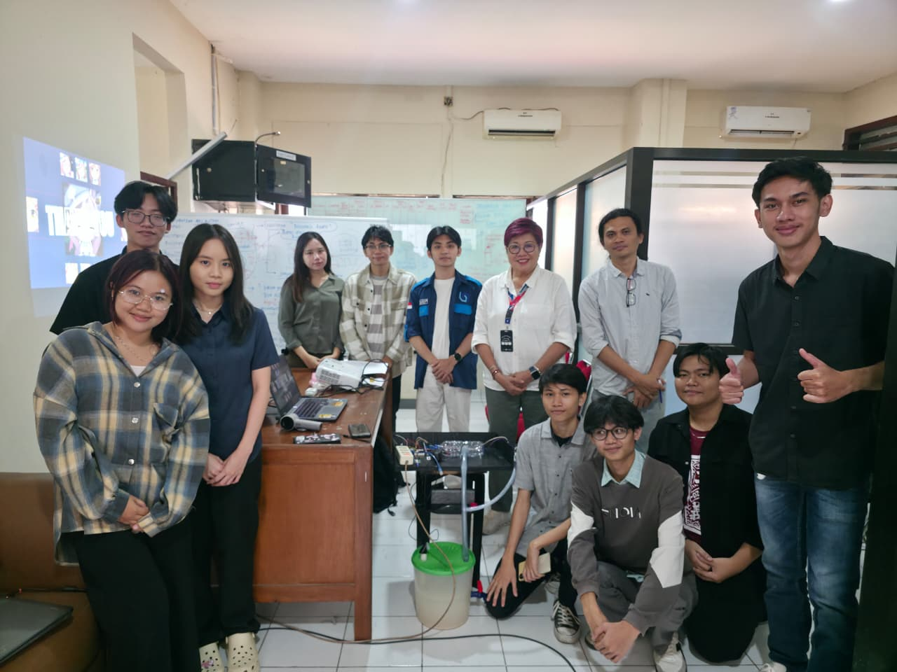

Perpaduan antara teknologi informasi dan pelestarian lingkungan selalu menjadi topik yang menarik buatku. Melalui mini project Smart Biogas, aku dan teman-teman kelompokku mencoba menerapkan konsep Internet of Things (IoT) pada sistem energi terbarukan, yaitu Biogas.
Sistem biogas tradisional seringkali sulit dipantau efisiensinya. Dengan menambahkan sensor pintar, kita bisa melacak parameter krusial seperti tekanan gas, suhu reaktor, dan pH secara real-time. Data ini kemudian diolah untuk memastikan proses fermentasi anaerobik berjalan optimal.
Proyek ini membuktikan bahwa teknologi cerdas tidak hanya berguna untuk kenyamanan di dalam rumah, tapi juga bisa berdampak positif bagi pengelolaan energi hijau yang ramah lingkungan. Ini adalah langkah kecil untuk masa depan yang lebih berkelanjutan.